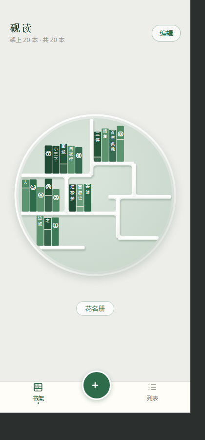
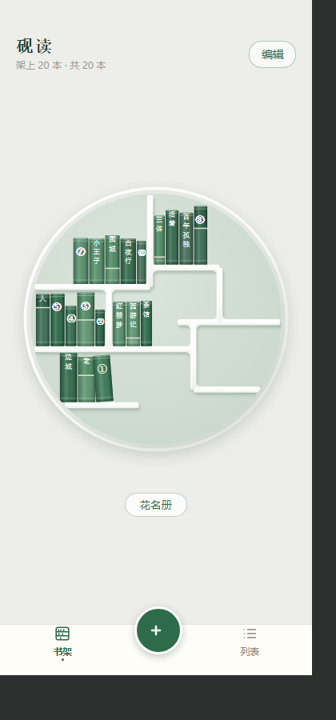

书脊改版 · 前后对照
量出来的问题不是"书太小"，是24 本书的书脊宽度全是 15.4，一模一样——
一排等宽矩形就是条码；再加书脊是纯色平涂，没有一点立体感。这两条一改，观感差一整个档次。
- 厚度不一：每本按书名哈希给 0.82~1.18 的厚度系数，把格子宽度分下去（现在 12~23 不等）
- 圆柱明暗：书脊两侧压暗、偏左一道高光 —— "它是一本书"而不是"一个绿方块"的关键
- 堵头布：上下两道装饰环带 + 书顶那条迎光的边
- 落板暗部：书底压暗 2.6px，书才像真的坐在板上
- 右缘暗缝：相邻两本之间一道 0.9px 暗线，不糊成一条
- 进度改成书签线：原来是拿一层白把下半本洗白（整排书发灰），现在是一道米色细线
- 配色收窄：去掉最深 #1F4A33 和最浅 #6A9E7C，八支绿现在在一档半的明度里
- 没放满的格子，最后一本会往回靠着（4.5°）—— 最像真书架的一笔，也顺带告诉你"这里还有空位"
真机尺寸390×844

改前 —— 等宽、平涂、下半本发灰

改后 —— 厚薄不一、有明暗、有堵头布
放大到 720px看 1px 的细节
这一栏是实时跑 www/js/shelf.js 渲出来的，不是手画的对照图 —— 看到的即所得。
靠着的那一本如果不喜欢，Shelf.configure({book:{lean:0}}) 就全部立正；
立体感想关掉是 {book:{craft:false}}。